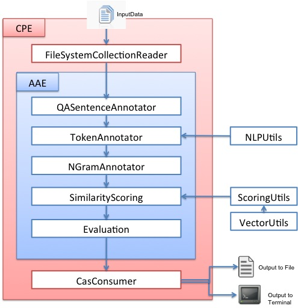
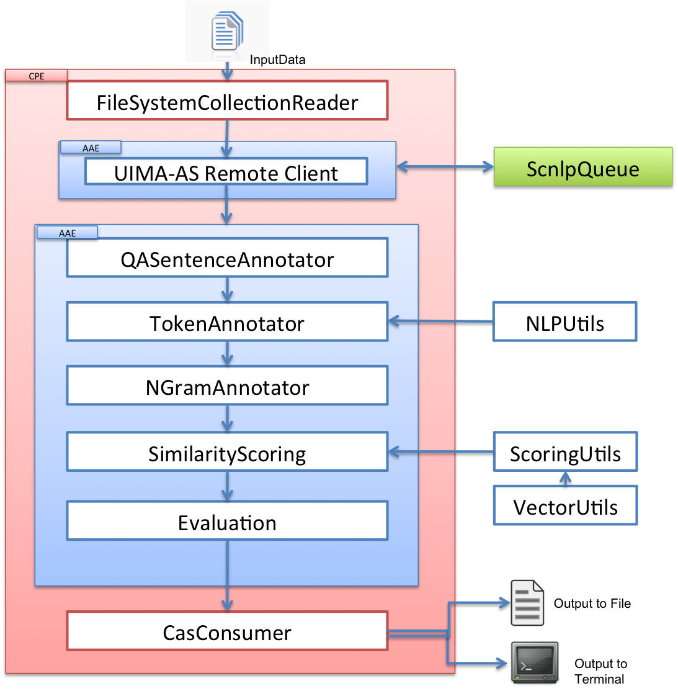
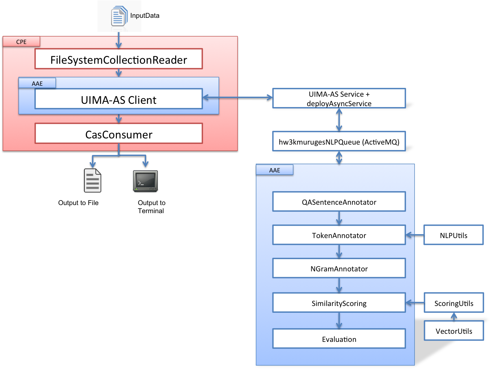

Annotator package contains all the annotator class files used in the pipeline.
The following image shows the complete components in the CPE engine

This image shows the CPE engine with Remote client.

This figure shows the CPE engine accessing the locally deployed service.
